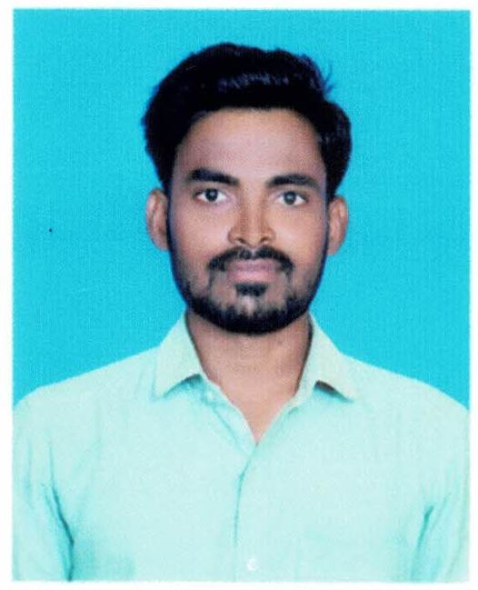

MUNNELLI CHINNA SUBBAIAHEmail : mechinna304@gmail.comPhone : 7207437775 Address : Porumamilla, Kadapa,Andhra Pradesh - 516505 |
 |
| S.NO | COURSE | UNIVERSITY | PERCENTAGE | Y.O.P |
| 1 | SSC | RCM HIGH SCHOOL | 82% | 2014 |
| 2 | INTERMEDIATE | APSWRS JR COLLEGE | 91% | 2016 |
| 3 | B.TECH | DR SGIT | 81% | 2020 |
Name : BiogenCONNECT Technology : ServiceNowDescription:
BiogenConnect is a biotechnology company at the forefront of cutting-edge advancements in healthcare and life sciences. With a strong commitment to research, innovation, and collaboration, we are dedicated to revolutionizing the way we understand, treat, and prevent diseases.
Name : Outokumpu
Technology : ServiceNow, JavaScript
Description:Our business is based on circular economy, as our most important raw material is recycled steel or scrap. Out of our three business areas, Europe and the Americas are responsible for manufacturing and selling stainless steel in their market areas, and Ferrochrome run our chrome mine and ferrochrome works – ferrochrome an essential raw material, as chrome is what makes steel stainless.
Date : Place :